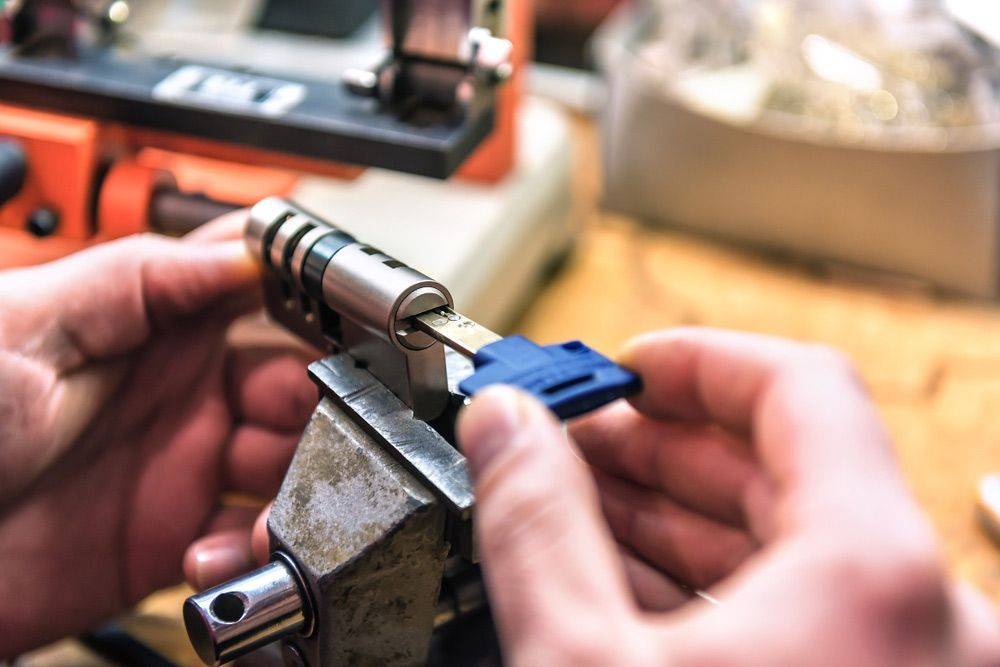

Get A Free Quote Now!
Thank you for contacting SPL Security Solutions.
We will be in touch soon.
Locksmith Solutions for Cars, Homes & Businesses
At SPL Security Solutions, we pride ourselves on being the go-to locksmith for all your needs in Molendinar. Our comprehensive range of services caters to cars, homes and businesses, providing peace of mind for our clients.
If you're a homeowner, we offer solutions such as lock replacement, key cutting and safe installation. For business owners, we can undertake a security audit that finds vulnerabilities in your security and provides you with tailored solutions to address these, such as restricted keys, monitoring capabilities and sophisticated access control systems. For vehicle owners, we provide comprehensive automotive locksmith services including car key replacement, rekeying and broken key removal.
For more information on our comprehensive range of locksmith services, call (07) 5588 8111.
In Molendinar, our residential locksmith services are tailored to meet your home security needs. From durable lock installations and repairs to professional rekeying, we offer full coverage. Plus, our quick key duplication and emergency lockout services mean you're never left unprepared or locked out when you misplace your original set.
The security of commercial premises and their assets is a top priority for our team. Our commercial locksmiths in Molendinar provide effective solutions to minimise risks through high-security lock installations, master key systems and access control measures. We also offer 24/7 emergency assistance for urgent situations, along with security assessments to identify potential vulnerabilities.
Our automotive locksmith services in Molendinar offer comprehensive solutions for all your car key needs. Our team can help with key replacements, duplications and transponder programming, along with ignition repair or replacement services. We also provide 24/7 emergency assistance, so you never have to worry about being stranded without help.
Our restricted key systems in Molendinar provide unparalleled security by preventing unauthorised access to specific areas. By creating a hierarchical structure, these systems ensure only authorised personnel can enter designated locations. Our team collaborates closely with our clients in Molendinar to customise these solutions, ensuring they align perfectly with their specific needs.
We offer a range of high-quality safes in Molendinar that are designed to meet varying security needs. Our selection includes options with fire resistance, reinforced walls and advanced locking mechanisms, providing maximum protection against theft and damage. We also provide comprehensive services such as installation, maintenance and emergency unlocking assistance to ensure your valuables are always safeguarded, yet accessible.
With our integrated security systems in Molendinar, you can rest easy knowing your property is protected against potential threats. Our solutions include CCTV cameras, alarm systems, access control and intercoms to provide complete surveillance and monitoring capabilities. We can help you choose the most effective combination of products for optimal protection and ease of use.
Keep your Molendinar property safe with dependable lock hardware, including reinforced deadlocks, cylinder locks and traditional padlocks. Our solutions are ideal for both residential and commercial use.
Molendinar residents can upgrade their doors with high-quality door hardware, including tough hinges, stylish handles and reliable door closers. These products ensure long-lasting performance and ease of use.
From fire-rated hardware to seamless door closers and refined handles, our collection balances functionality and design appeal for modern and traditional interiors in Molendinar.
24/7 Emergency Locksmith Services
You can stress less in instances of lock-related emergencies, thanks to SPL Security Solutions. Our team provides 24/7 emergency locksmith services to Molendinar residents, offering rapid response and professional solutions. Whether you're locked out of your home or need urgent lock repairs after a break-in, our team has you covered.
In case of attempted or actual intrusion, our team can assess your property and provide necessary repairs or replacements to secure your entry points. Our mobile vans are equipped with the latest tools and technology to offer on the spot lock replacements, rekeying and more. Contact our team for all your emergency locksmith needs.

Contact Details
24/7 Emergency Locksmiths or Security Tech


Trading Hours
Retail Shop

Frequently Asked Questions
-
What should I consider when choosing a lock for a high-security area?
For high-security areas, consider locks that offer features such as drill resistance, pick resistance and the ability to resist brute force attacks. You may also want to choose locks that support a master key system or integrate with electronic security systems for enhanced control.
-
How can I maintain my locks to ensure they last longer?
Regular maintenance of your locks can include cleaning them with a gentle detergent, applying a dry lubricant to the moving parts at least once a year, and avoiding unnecessary force with keys. Also, check periodically for loose components or signs of wear.
Locksmith & Security Solutions Gold Coast, Brisbane & Northern NSW